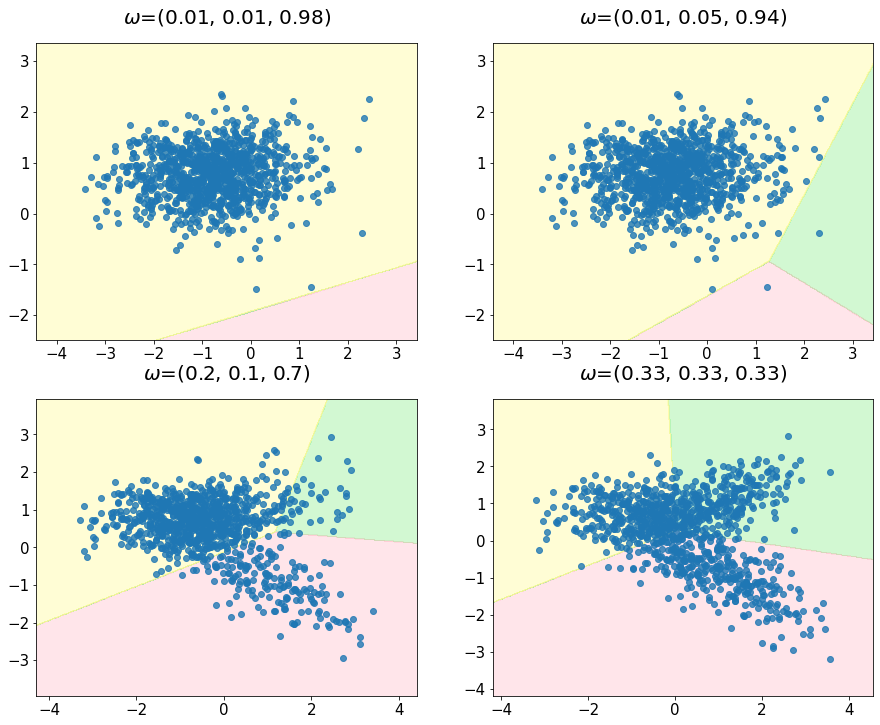

Imbalanced data ¶
Problem: how to deal with imbalanced data ?
We will generate some test datasets (as defined in Classification data ).
from collections import Counter
from plotutils import *
from sklearn.datasets import make_classification
from sklearn.svm import LinearSVC
import numpy as np
def create_dataset(n_samples=1000, weights=(0.01, 0.01, 0.98), n_classes=3,
class_sep=0.8, n_clusters=1):
return make_classification(n_samples=n_samples, n_features=2,
n_informative=2, n_redundant=0, n_repeated=0,
n_classes=n_classes,
n_clusters_per_class=n_clusters,
weights=list(weights),
class_sep=class_sep, random_state=0)
We define a few functions to handle the plotting of the decision boundaries and resampling methods.
def plot_resampling(X, y, sampling, ax):
X_res, y_res = sampling.fit_resample(X, y)
ax.scatter(X_res[:, 0], X_res[:, 1], c=y_res, alpha=0.8, edgecolor='k')
ax.spines['top'].set_visible(False)
ax.spines['right'].set_visible(False)
ax.get_xaxis().tick_bottom()
ax.get_yaxis().tick_left()
ax.spines['left'].set_position(('outward', 10))
ax.spines['bottom'].set_position(('outward', 10))
return Counter(y_res)
from matplotlib.colors import ListedColormap
def plot_decision_function(X, y, clf, ax):
cmap = ListedColormap(
[adjust_opacity(colours[0], 0.1), adjust_opacity(colours[1], 0.2), adjust_opacity(colours[2], 0.1)]
)
plot_step = 0.02
x_min, x_max = X[:, 0].min() - 1, X[:, 0].max() + 1
y_min, y_max = X[:, 1].min() - 1, X[:, 1].max() + 1
xx, yy = np.meshgrid(np.arange(x_min, x_max, plot_step), np.arange(y_min, y_max, plot_step))
Z = clf.predict(np.c_[xx.ravel(), yy.ravel()])
Z = Z.reshape(xx.shape)
ax.contourf(xx, yy, Z, alpha=0.4, cmap=cmap)
ax.scatter(X[:, 0], X[:, 1], alpha=0.8, cmap=cmap)
#collapse
fig, ((ax1, ax2), (ax3, ax4)) = plt.subplots(2, 2, figsize=(15, 12))
ax_arr = (ax1, ax2, ax3, ax4)
weights_arr = ((0.01, 0.01, 0.98), (0.01, 0.05, 0.94),
(0.2, 0.1, 0.7), (0.33, 0.33, 0.33))
for ax, weights in zip(ax_arr, weights_arr):
X, y = create_dataset(n_samples=1000, weights=weights)
clf = LinearSVC().fit(X, y)
plot_decision_function(X, y, clf, ax)
ax.set_title('$\omega$={}'.format(weights))
